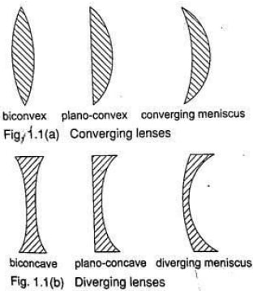
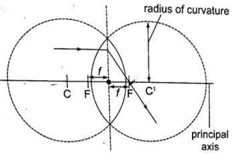
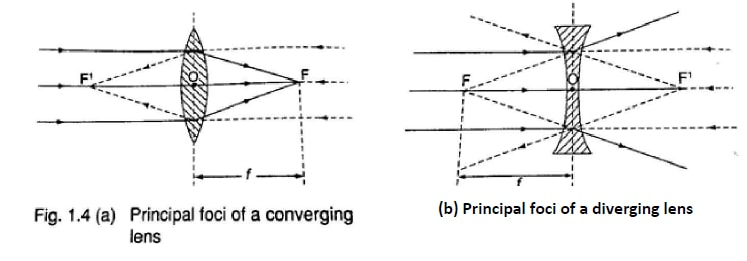

- A lens which is thicker at its centre than at its edges converges light and is called convex or converging lens
- A lens which is thicker at its edges than at its centre diverges light and is known as concave or diverging lens.

Properties of Lenses
- Optical centre
- This is the geometric centre of a lens which is usually shown using a black dot in ray diagrams.
- A ray travelling through the optical centre passes through in a straight line.
- Centre of curvature
- This is the geometric centre of the circle of which the lens surface is part of.
- Since lenses have two surfaces there are two centres of curvature.
- C is used to denote one centre while the other is denoted by C1 .
- Principal axis
- This is an imaginary line which passes through the optical centre at right angle to the lens.
- Principal focus
- this is a point through which all rays travelling parallel to the principal axis pass after refraction through the lens.
- A lens has a principal focus on both its sides.
- F is used to denote the principal focus
- Focal length
- this is the distance between the optical centre and the principal focus. It is denoted by ‘f’ .

- this is the distance between the optical centre and the principal focus. It is denoted by ‘f’ .
Note:
- The principal focus for a converging lens is real and virtual for a diverging lens.
- The principal focus is not always halfway between the optical centre and the centre of curvature as it is in mirrors.
